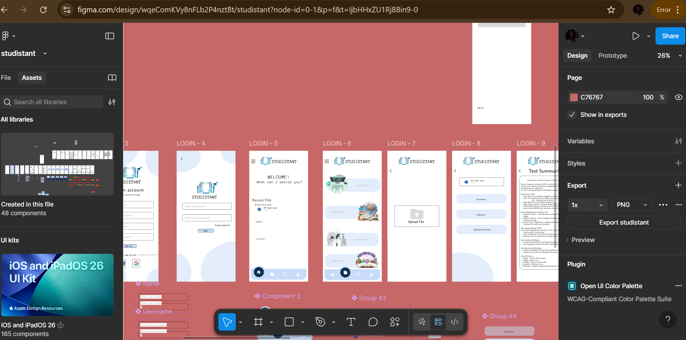
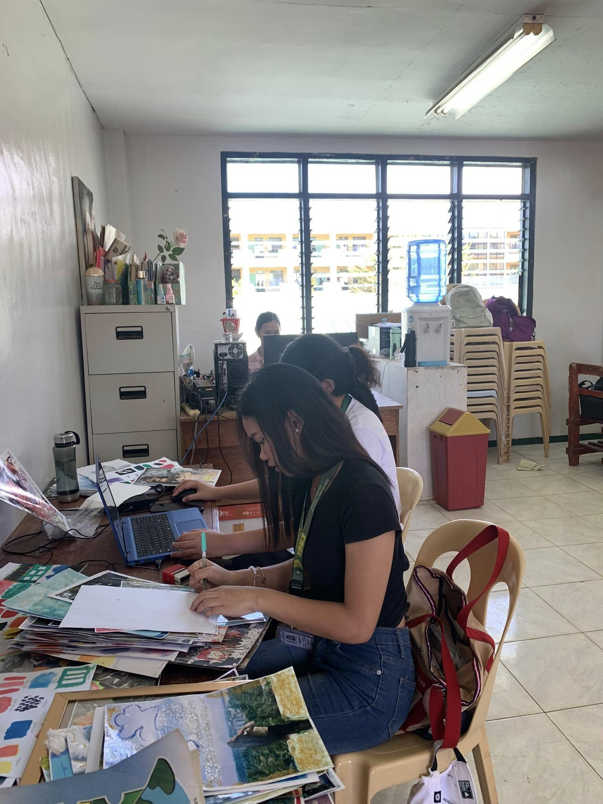

Projects
Every project I’ve completed reflects not just what I’ve learned, but who I’ve become — someone who grows through challenges, learns from mistakes, and creates with passion and purpose.

STUDISTANT APP
Last semester, my partner Thrisha and I created a prototype of our wireframe, and we realized that making your own website or app is not easy—especially when it comes to combining colors and styles.
Experiences

IMMERSION
When I was in senior high school, we had a program called immersion, where students gained experience related to their strand. For example, I was a Humanities and Social Sciences student, so I needed to teach and record all the students’ activities.